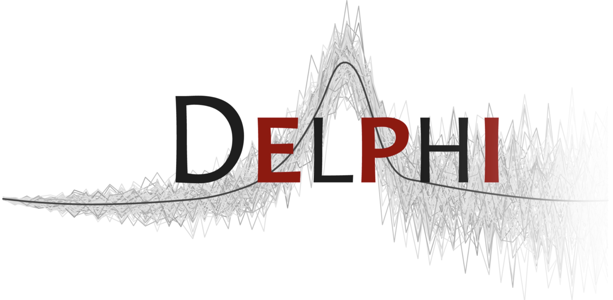

Forecasting Season 2024/25 Summary
Flu and Covid state level quantile forecasting
Dmitry Shemetov & David Weber
2025/05/22
The data
Shape of the Season Data: Flu
Shape of the Season Data: Covid
Data Revisions: Flu largest mean revision
Data Revisions: Covid largest mean revision
Models
Our Models: Simplest
linear: linearly extrapolate the last 4 weeksclimate_base: a climatological model, quantiles estimated from a 7 week period centered on thetarget_date’s season week from historical data for that geoclimate_geo: a climatological model, likeclimate_basebut converts to rates, and then creates quantiles using all geos.climate_linear: a weighted ensemble of the climatological and linear
Our AR models
windowed_seasonal: an AR model where the training data is taken from a window 4 weeks before and after the training- Covid predicted this on rates data
- For flu, this model also uses ILI+ data and fluSURV, with the forecasts done on variance stabilized, scaled, and centered data, on a per-geo-source basis.
- the variance stabilization is a 4th root
- the scaling is by the difference between the 5th and 95th quantiles
- the centering is so that the median is zero
- Lags are just 0 and 7 (because of latency, this is actually
c(7,14))
windowed_seasonal_nssp: likewindowed_seasonalwithout the data scaling, and usingnssp(emergency department visits) as an exogenous predictor (same lags).
Timeline of models used
Flu Model
2024-11-21initial forecast, straight average ofclimate_base,climate_geoandlinear2024-11-27climate_linearensemble instead of average (2 weeks)2024-12-11introducewindowed_seasonalto ensemble (5 weeks)2025-01-15introducewindowed_seasonal_nsspto ensemble- Final model ensembles
windowed_seasonal(which uses ILI+ and FluSURV),windowed_seasonal_nssp(which doesn’t), andclimate_linear
Covid Model
2024-11-21initial forecast, straight average ofclimate_base,climate_geoandlinear2024-11-27climate_linearensemble instead of average (9 weeks)2025-01-29windowed_seasonal_nsspintroduced to ensemble2025-02-19forecast using onlywindowed_seasonal_nssp- Final model uses only
windowed_seasonal_nssp, except for states withoutnssp, where it ensembleswindowed_seasonalandclimate_linear
Flu Scores: WIS
Flu Scores: Absolute Error
Flu Scores: Histogram
Callouts
Note
You can use these. See https://quarto.org/docs/authoring/callouts.html
Final slide
Thanks:
- The whole CMU Delphi Team (across many institutions)
- Optum/UnitedHealthcare, Change Healthcare.
- Google, Facebook, Amazon Web Services.
- Quidel, SafeGraph, Qualtrics.
- Centers for Disease Control and Prevention.
- Council of State and Territorial Epidemiologists
 
Season 2025 —